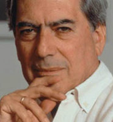

(1936 – )

Gabriel Garcia Marquez, Julio Cortazar ve Carlos Fuentes'le birlikte "Güney Amerikan Baharı" denen düşünsel devrimin öncülerinden olan Perulu yazar Llosa, yazarlık kariyerini genellikle Avrupa'da sürdürmesine rağmen hemen hemen tüm romanlarında ülkesi Peru'yu anlattı. Romanları ülkemizde de büyük ilgiyle karşılanan yazar, 2010 yılında Nobel Edebiyat Ödülü'nü kazandı.
Latin Amerikan edebiyatının en güçlü temsilcilerinden romancı, oyun yazarı ve edebiyat eleştirmeni Mario Vargas Llosa (okunuşu: Maryo Vargas Yosa), 28 Mart 1936 tarihinde Peru'nun Arequipa kentinde doğdu. Dedesinin konsolos olarak görev yaptığı Bolivya'nın Cochabamba kentinde yetişti. 1950-52 yılları arasında başkent Lima'daki Leoncio Prado askeri okulunda, sonra da Colegio Nacional San Miguel de Piura'da okudu. 1955'te Julis Irquidi ile evlendi. Yazar 1955-57 yılları arası San Marcos Üniversitesi'nde hukuk ve edebiyat okudu. İspanya'da, Madrid Üniversitesi'nde doktora yaptı (1959). Llosa'nın doktora tezi Gabriel Garcia Marquez üzerineydi ve sonraki yıllarda da edebi eleştiri anlamındaki üretkenliği devam etti.
Llosa 1950'lerde, daha öğrenciyken gazetecilik de yapıyor ve edebi dergilerde yazılar yazıyordu. Yayımlanan ilk yapıtı, 1952'de basılan İnka'nın Kaçışı adlı oyundu. Ardından çeşitli dergilerde öyküleri yayımlandı.1959 yılında kısa öykülerini topladığı Los Jefes adlı kitabını yayımladı. Gazetecilik ve televizyonculuk yaptı. Cuadernos de Composiction ile Literatura dergilerinin yayın kadrosunda yer aldı. 1959-1966 arasında Paris'te yaşadı. Paris yıllarında Llosa, İspanyolca öğretmenliği yaptı, Agence-France-Presse ve Fransız radyo-televizyonunda çalıştı. İlk romanı Kent ve Köpekler, 1963'te yayımlandığında büyük ilgi gördü, birçok dile çevrildi. 1965 yılında Patricia Llosa ile evlenen yazarın iki oğlu, bir kızı oldu.
Üç yıl Londra'da yaşadı. 1969'da ABD'de Washington Üniversitesi'nde ders verdi. 1970'te Barselona'ya yerleşti, ama 1974'te Lima'ya döndü. 1976 yılında Cannes Film Festivali'nde jüri üyeliği yapan Llosa, 1977'de Uluslararası PEN Yazarlar Kulübü başkanlığı yaptı.
Önceleri Küba Devrimi'ne sempati duyan bir solcuyken zaman içinde liberal sağa geçiş yapan Llosa, 1990'da Demokratik Cephe'nin adayı olarak katıldığı Peru başkanlık seçimlerinde başarılı olamadı. Ancak onu yenen Alberto Fujimori, bir yolsuzluk skandalının ardından Peru'dan, atalarının ülkesi Japonya'ya kaçmak zorunda kaldı.
1991-92 yıllarında Uluslararası Florida Üniversitesi'nde ve Berlin'deki Wissdenschaftskolleg'de konuk hoca olarak ders veren Mario Vargas Llosa, Latin Amerikalı yazarların en tanınmışlarından ve ustalarından biri oldu. 2010 Nobel Edebiyat Ödülü'nün yanı sıra birçok ulusal ve uluslararası ödülü bulunan yazar, halen eşi ve üç çocuğuyla birlikte Avrupa'da yaşamaktadır.
Seçme Romanları: Kent ve Köpekler (1963), Yeşil Ev (1966), Köpek Yavruları (1967), Katedralde Konuşma (1974), Yüzbaşı ve Kadınlar Taburu (1973), Mayta'nın Öyküsü (1992), And Dağları'nda Terör (1993), Julia Teyze (1977), Don Rigiberto'nun Not Defterleri (1999), Masalcı (1996), Palomino Molero'yu Kim Öldürdü (1986), Üveyanne'ye Övgü (1994), Dünyanın Sonunu Getiren Savaş (1982), Teke Şenliği (2003)